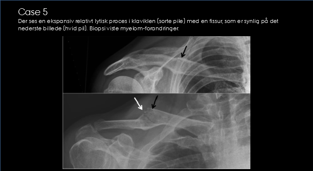

<div style="width: 640px; margin: auto; text-align: center; font-family: arial;">

<h1>Det Radiologiske Case-spil</h1>

<br>

<div style="width: 300px; margin: auto; text-align: left; border: 1px solid #ccc; margin-top: 5px;">
<b>Hvad viser unders&oslash;gelsen?</b><br>
<div style="width: 50px; height: 50px; float: right;"><a href="02.html">N&aelig;ste</a></div>
<ul>
<li><a href="01a.html">Akromio-klavikul&aelig;r subluksation</a>
<li><a href="01b.html">Kronisk osteomyelit</a>
<li><a href="01c.html"><b>Oss&oslash;s destruktion med fraktur</b></a>
<li><a href="01d.html">Klavikelfraktur</a>
</ul>
</div>

<h2>Aarhus Universitet</h2>

</div>